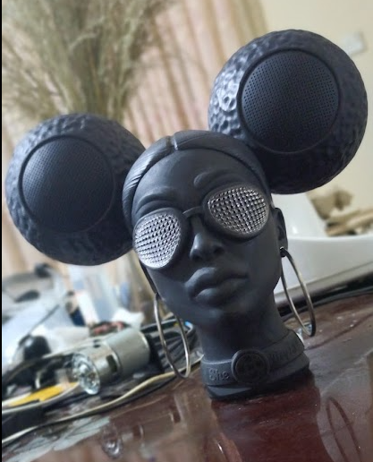
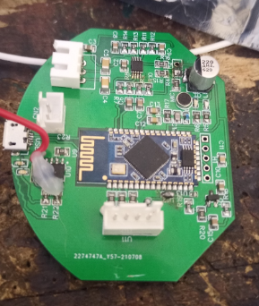

Not just a Bluetooth speaker - a versatile companion with 30W AKG-tuned audio, 80+ hours playback, 100W USB-C PD power bank, and TWS party mode for syncing multiple units. Sculptural industrial design with dual circular drivers in a wearable form factor.

She Bops is a premium Bluetooth speaker designed to be much more than a portable audio device. The sculptural form factor features dual circular speaker drivers mounted on a mannequin bust silhouette, turning functional audio hardware into a statement piece. The 30W AKG-tuned drivers deliver clarity and depth, adapting to any environment from home listening to outdoor adventures.
With over 80 hours of playback time, it doubles as a reliable emergency battery backup for phones and laptops via its built-in 100W Type-C Power Delivery supply. The True Wireless Stereo (TWS) feature enables party mode - synchronize multiple She Bops speakers for immersive surround sound at gatherings.

The main electronics board is a circular PCB housing the Bluetooth SoC, audio amplification chain, and power management circuitry. JST connectors interface with the battery pack and speaker drivers, while the onboard crystal oscillator clocks the wireless subsystem. The compact circular form factor fits within the speaker enclosure's sculptural geometry.
I designed the hardware architecture including the power management system for the 100W USB-C PD output, the audio amplification chain driving the AKG-tuned speakers, BLE/TWS connectivity for multi-speaker sync, and the battery charging circuitry that supports the 80+ hour runtime. The power bank functionality required careful design to safely deliver 100W while maintaining audio quality during simultaneous playback and charging.